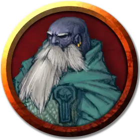

Дуэргар деспот
Duergar Despot
Средний Гуманоид (Дварф), законно-злой

Класс Доспеха 21 (природный доспех)
Хиты 119 (14к8 + 56)
Скорость 25 футов
| мод | спас | ||
|---|---|---|---|
| СИЛ | 20 | +5 | +5 |
| ЛОВ | 5 | −3 | −3 |
| ТЕЛ | 19 | +4 | +8 |
| мод | спас | ||
|---|---|---|---|
| ИНТ | 14 | +2 | +2 |
| МДР | 15 | +2 | +6 |
| ХАР | 13 | +1 | +1 |
Иммунитет к урону яд
Иммунитет к состояниям испуг, истощение, отравление, очарование, паралич
Чувства тёмное зрение 120 футов, пассивное Восприятие 12
Языки Дварфийский, Подземный
Опасность 12 (8400 опыта)
Бонус мастерства +4
Среда обитания Горы, Подземье
Особенности
Врождённое колдовство (псионика). Базовой характеристикой дуэргара деспота является Интеллект (Сл спасброска от заклинания 12). Он может накладывать следующие заклинания, не нуждаясь ни в каких компонентах:
• Неограниченно: волшебная рука (mage hand), малая иллюзия (minor illusion)
• 1/день каждое: контрзаклинание (counterspell), туманный шаг (misty step), зловонное облако (stinking cloud)
Сопротивление магии. . Дуэргар совершает с преимуществом спасброски от заклинаний и прочих магических эффектов.
Психический источник энергии. Когда дуэргар деспот получает критический урон или его здоровье опускается до 0, сдерживаемая психическая энергия вырывается наружу, нанося 14 (4к6) урона психической энергией всем существам в радиусе 5 футов от него.
Чувствительность к солнечному свету. . Находясь на солнечном свету, дуэргар совершает с помехой броски атаки, а также проверки Мудрости (Восприятие), полагающиеся на зрение.
Действия
Мультиатака. Деспот делает две атаки железным кулаком и две атаки сильной стопой. Вместо любых из этих атак (до 4) он может использовать Струю пламени.
Железный кулак. Рукопашная атака оружием: +9 к попаданию, досягаемость 5 футов, одна цель. Попадание: 14 (2к8+5) дробящего урона. Если цель – существо Большого или менее размера, она должна пройти спасбросок Силы Сл 17, при провале она будет откинута на 30 футов по прямой линии. После приземления цель становится лежащей ничком и получает 10 (3к6) дробящего урона.
Сильная стопа. . Рукопашная атака оружием: +9 к попаданию, досягаемость 5 футов, одна цель. Попадание: 9 (1к8+5) дробящего урона, или 18 (3к8+5), если цель Лежит ничком.
Струя пламени. Дуэргар изрыгает струю пламени длиной 100 футов и шириной 5 футов. Каждое существо, оказавшееся в радиусе действия, должно пройти спасбросок Ловкости Сл 16, получая 18 (4к8) урона огнём при провале или половину этого урона при успехе.
Описание
Дуэргары деспоты заменяют части своих тел на механические, контролируя их с помощью своих псионических способностей.